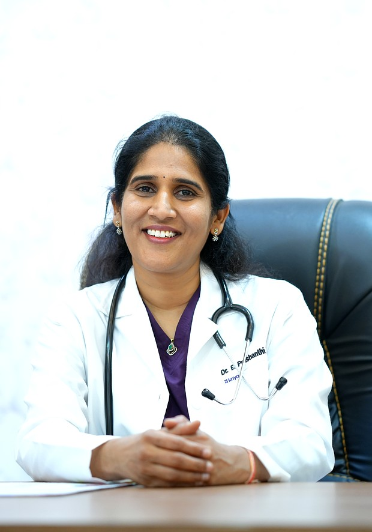

Dr. E. Prashanthi Reddy · MBBS · DGO · Diploma in ART, Kiel University Germany · TGMC Reg: 50624 · 19+ Years · 5,000+ IVF Cycles
Led by Dr. E. Prashanthi Reddy — Germany-trained IVF and fertility specialist with 19+ years and 5,000+ IVF cycles — Mother Hospitals offers IVF, Needleless IVF, PCOS treatment, male infertility care, high-risk pregnancy management and safe delivery. All-inclusive IVF at ₹99,000 with no hidden charges. ART Act 2021 certified · 4.7★ · Boduppal, Hyderabad.

Comprehensive fertility, maternity and gynaecology services — many of which are unique to Mother Hospitals in this region.
Our exclusive needleless IVF treatment offers a pain-free fertility journey — no injections, minimal discomfort, same high success rates. A unique offering in Hyderabad.
Learn More →Advanced assisted reproduction using the latest IVF laboratory technology with personalised protocols to maximise your success.
Learn More →Specialised treatment for couples who have experienced repeated IVF failures or have low AMH / poor ovarian reserve — with personalised advanced protocols.
Learn More →Complete male fertility care — low sperm count, azoospermia, DNA fragmentation, TESA surgical retrieval, and ICSI. Male factor is involved in 50% of infertility cases.
Learn More →State-of-the-art cryopreservation of eggs, embryos and semen — preserve fertility and plan parenthood at your own pace.
Learn More →Complete antenatal, delivery and postnatal care with expert management of high-risk pregnancies — normal delivery and C-section.
Learn More →Comprehensive women's health covering PCOS/PCOD, hormonal disorders, menstrual issues and preventive screenings.
Learn More →Minimally invasive procedures for uterine, ovarian and fallopian tube conditions with faster recovery.
Learn More →Hyderabad's trusted test tube baby centre — IVF treatment with highest success rates, all-inclusive ₹99,000 package. ART Act 2021 certified.
Learn More →ART Act 2021 compliant donor egg programme for women with poor ovarian reserve, premature menopause, or repeated IVF failure with own eggs.
Learn More →Comprehensive evaluation and treatment for repeated pregnancy loss — thrombophilia, PGT-A, ERA, immunological and hormonal investigations.
Learn More →Certified cosmetic gynaecology including vaginal tightening, vaginal rejuvenation and intimate wellness treatments — unique to Mother Hospitals in this region.
Enquire Now →From fertility consultation to safe delivery and gynaecological care — Mother Hospitals is Hyderabad's most comprehensive women's hospital.
9 free consultations · 50% off scans · Free nutrition counselling & more — complete pregnancy support for 9 months.
Dr. E. Prashanthi Reddy is a highly experienced Obstetrician, Gynaecologist and Fertility Specialist with 19+ years of expertise. She specialises in needleless IVF, natural cycle IVF, ERA testing and recurrent IVF failure treatment — making her unique among fertility specialists in Hyderabad. Her compassionate, evidence-based approach delivers outstanding fertility outcomes.
Full Profile & Awards →Every credential, certification and professional membership that makes Mother Hospitals Hyderabad's most trusted women's hospital.
Special thanks to Dr. Prashanthi madam and Naveena madam and Noor madam and all staff members of Mother Hospital. We have good results and it was successful — now we are very happy!
I tried 3 times IVF but unfortunately it failed. My age is 44. I went to Mother's Hospital — they are explaining and caring, wow it's amazing. Now I am 3 months pregnant!
After two failed IVF cycles elsewhere, we got our miracle baby here. Dr. Prashanthi Reddy explained every step clearly and made us feel at ease. The team is outstanding!
Mother Hospitals & IVF Center offers an all-inclusive IVF package at ₹99,000/- which includes stimulation injections, egg pick-up (OPU), ICSI, all consultations and monitoring scans. Valid till 30th June 2026. Call 97059 93366 for current pricing.
Dr. E. Prashanthi Reddy — MBBS, DGO, Diploma in ART (Kiel University, Germany) — is the Founder & Medical Director of Mother Hospitals & IVF Center, Boduppal. With 19+ years of experience, she is widely regarded as one of the best fertility specialists in East Hyderabad.
Needleless IVF is a pain-free IVF protocol that avoids conventional injection-based stimulation. Mother Hospitals & IVF Center is among the very few centers in Hyderabad offering this treatment — ideal for patients who fear injections.
Yes. Mother Hospitals & IVF Center welcomes patients from the USA, UK, Gulf, Middle East and across India. We offer remote initial consultations, pre-arrival treatment planning, and dedicated NRI care coordination.
Mother Hospitals & IVF Center is a women's healthcare and fertility hospital in Boduppal, Hyderabad. Led by Dr. E. Prashanthi Reddy (MBBS, DGO, Diploma in ART — Germany), it offers IVF, Needleless IVF, ICSI, PCOS treatment, maternity care, safe delivery, laparoscopy and cosmetic gynaecology. ART Act 2021 certified with 19+ years of experience and a 4.7★ Google rating.
Yes. Mother Hospitals offers complete maternity services including normal delivery, C-section, high-risk pregnancy management, antenatal care and postnatal care. The exclusive Mother 9 Card (₹500) provides 9 months of comprehensive pregnancy support including OPD visits, ultrasound discounts and nutrition counselling.
Yes. Dr. E. Prashanthi Reddy is an experienced Obstetrician with specialist expertise in high-risk pregnancy management — including gestational diabetes, hypertension in pregnancy, multiple pregnancies (twins after IVF), preterm labour risk and elderly primigravida care. Patients from across east and south Hyderabad trust Mother Hospitals for complex pregnancy cases.
Mother Hospitals stands apart through: (1) Needleless IVF — pain-free IVF without daily injections, unique in east Hyderabad; (2) Germany-trained specialist — Dr. Prashanthi Reddy's ART diploma from Kiel University; (3) ₹99,000 all-inclusive IVF package with zero hidden charges; (4) Full-spectrum care combining IVF, maternity, gynaecology and cosmetic procedures under one roof; (5) ART Act 2021 government-certified centre with TGMC-registered doctors.
Mother Hospitals & IVF Center serves patients from across Hyderabad, Telangana and NRI patients worldwide. Conveniently located in Boduppal with easy access from all these areas.
Not sure how to reach us? Contact us — we'll guide you from your location.
Patient Journey
Simple, transparent, supportive — from your first call to your first smile
Reach us at 97059 93366 or WhatsApp 90520 74999. Our care coordinator answers your first questions — no forms, no wait.
Meet Dr. E. Prashanthi Reddy for a detailed review of your history, current health, and concerns. No rush — we listen first.
Targeted blood tests, scans, and semen analysis as needed — all under one roof with Voluson P8 ultrasound technology.
Your customised treatment protocol — whether IVF, IUI, maternity care, or gynaecology — explained clearly with full cost transparency.
Treatment begins with continuous monitoring, WhatsApp check-ins, and our team available 24/7 for any concern or question.
Join 3,000+ families who trusted Mother Hospitals. From your first consultation to holding your baby — we're with you every step.
100% Free · No Sign-Up Required
15 evidence-based fertility tools built for Indian women — instant results, completely private
Expert Articles
Evidence-based fertility insights — authored by Dr. E. Prashanthi Reddy
Our team is here to guide you. Reach out today and start your path to parenthood.
Fill in your details — we'll call you back to confirm your appointment.
Enquiry Submitted Successfully!
Thank you! Please call us to confirm your appointment: